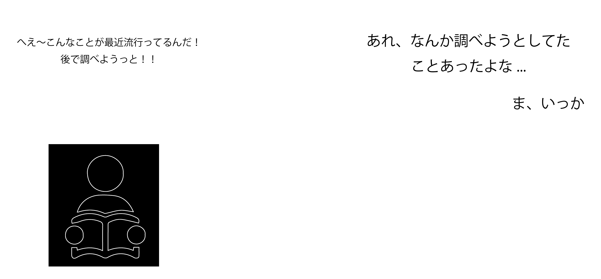

あなたの「気になる」を逃さない。
wordrop
このアプリでこんな問題を解決できます
読書中に気になったwordを、あなたの代わりに調べてくれる
機能:1.指につけてあるデバイスで気になる文字の付近をなぞる。 2.なぞった部分を画像として保存、その画像から文字情報のみを抜き出す。それを形態素解析し、その中から固有表現を抽出する。抽出された文字を解析し、データベースへ保存する。 3.データベース上に表示された文字の大きさと色にはそれぞれ意味を持っている。先程の、文字解析でそれらを行っている。自分がなぞったワードに対して、もし他ユーザーも同じワードをなぞっていた場合、今までの他のユーザー達がなぞった回数の頻度により、重要性の高低を判断し、文字の大きさを変更して表示されるようにしている。また、なぞったワードに対し、元々用意してある、「人」、「場所」、「人工物」、「それ以外」かの要素に当てはめ、当てはまった要素の色に変更して表示されるようにしている。 4.表示されている文字をクリックすると、その文字に関する情報をWikipediaAPIを利用して、知ることができる。また、文字の要素が「場所」だった場合は、Wikipedia情報の下に、googleマップを付けている。 5.一度調べたワードはアーカイブのようにリスト化される。
気になる、でも読書の邪魔をしたくないという思い
背景:みなさんはこんな経験をしたことがありませんか？ 本や雑誌を読んでいるときに、気になるワードが出てきたが、後々調べようと思ったまま調べるのを忘れてしまっていたという経験です。このような問題を解決すべく、直感的に気になる情報を抜き出し、後から見るためにまとめて貯蔵しておくことが可能なデバイスがあるならば、自然な読書を邪魔することなく、好きな時に好きなだけ調べることが可能なのではと考えました。
このアプリは、国内最大級ハッカソンイベントJPHACKS2016で開発を行い、野村證券賞を獲得いたしました。
ここでの私の役割として、アプリの設計やUI設計、サーバーサイドの実装などを行いました。技術的なところで言えば画像から文字を抽出し、その文字を形態素解析を行い、文字データをデバイスからデータベースに保存するということと、web側で読み取った文字データの情報を表示することです。
使用言語、環境:PHP,Python,MySQL,HTML,CSS
URL: https://devpost.com/software/wordrop
https://2016.jphacks.com/result/result_tag/prize
BACK